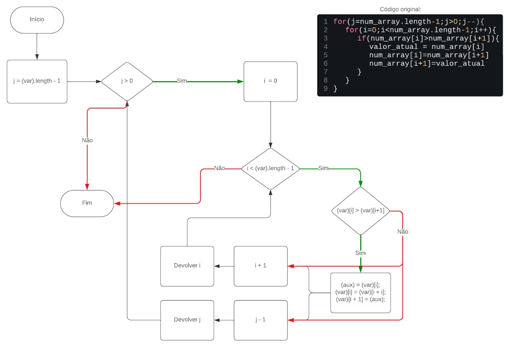
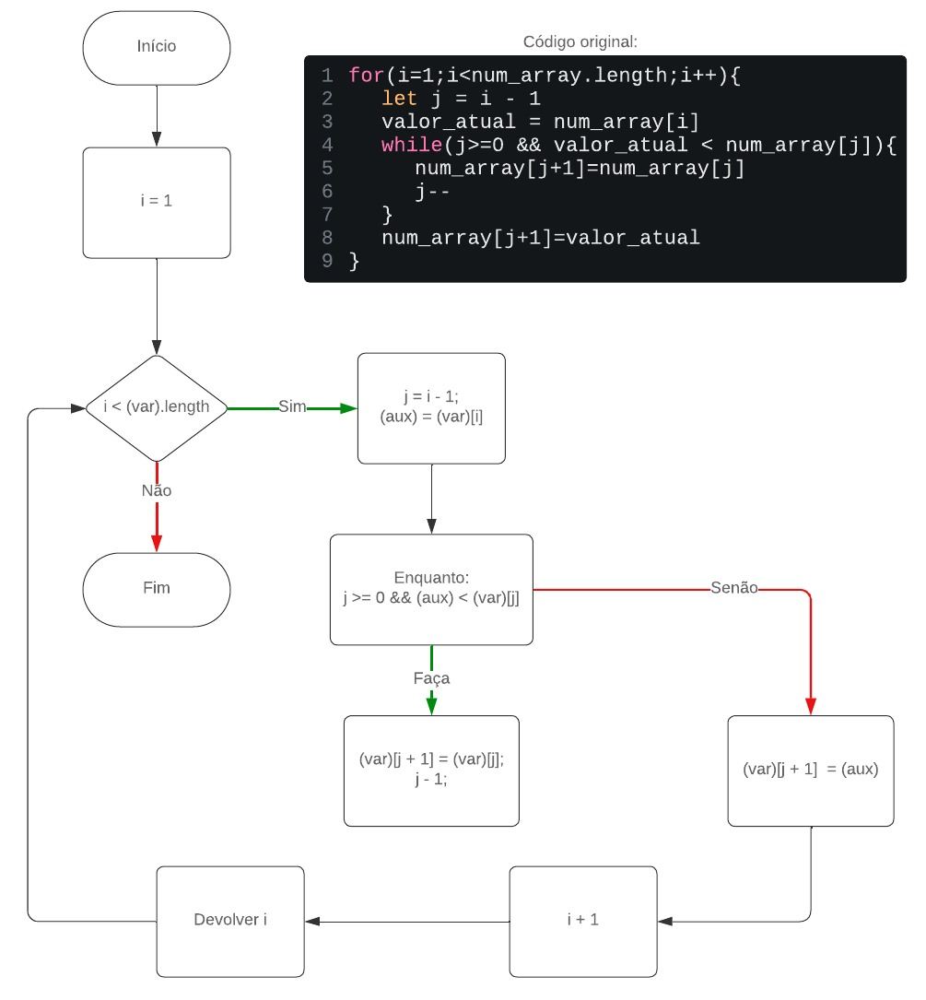

Áreas de Aplicação
- Algoritmos de otimização para sites e aplicativos
- Fluxogramas de exemplo para automação de processos
- Programas e soluções implementadas em JavaScript
Algoritmos Utilizados
Veja abaixo alguns algoritmos utilizados em nossos projetos para criar experiências eficientes e interativas:
Algoritmo de Ordenação Bubble Sort
Utilizamos este algoritmo para simular interações do usuário, permitindo que nossos clientes testem funcionalidades e detectem possíveis melhorias.
Fluxograma do Algoritmo

Algoritmo de Inserção Ordenada
Este algoritmo implementa o método de ordenação por inserção (*Insertion Sort*), onde elementos de um vetor são inseridos em sua posição correta, um por um, resultando em uma lista ordenada.
Fluxograma do Algoritmo

Algoritmo de Seleção Ordenada
Este algoritmo implementa o método de ordenação por seleção (*Selection Sort*), onde o menor elemento de uma lista é encontrado e trocado com o elemento da posição inicial, repetindo o processo para os elementos restantes.
Fluxograma do Algoritmo